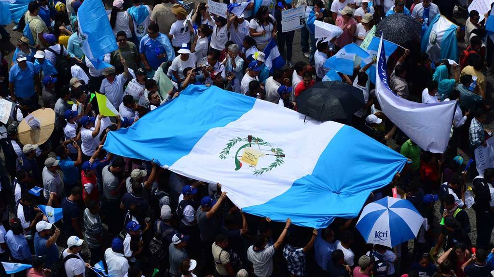

¿Como llegamos aquí?

Los 13 días de agonía del expresidente Serrano (y sus diferencias con OPM)
ANA CAROLINA ALPÍREZ
Once momentos clave para llegar a las dos cabezas de la Línea
PEP BARCÁRCEL
¿Por que el movimiento no le gana a los corruptos?
MARTÍN RODRIGUEZ PELLECER